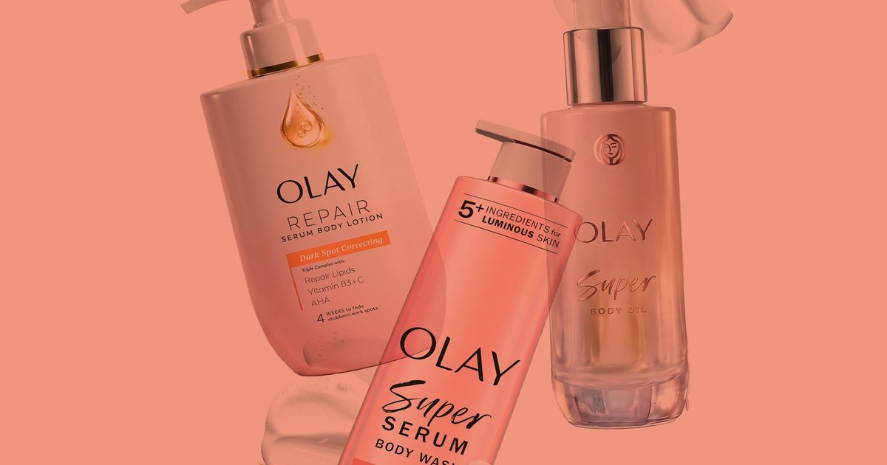

7 лучших средств по уходу за телом Olay для сияющей кожи с головы до ног
Шесть редакторов красоты проложили свой путь через линейку Olay по уходу за телом - откройте для себя своих любимцев.

Шесть редакторов красоты проложили свой путь через линейку Olay по уходу за телом - откройте для себя своих любимцев.